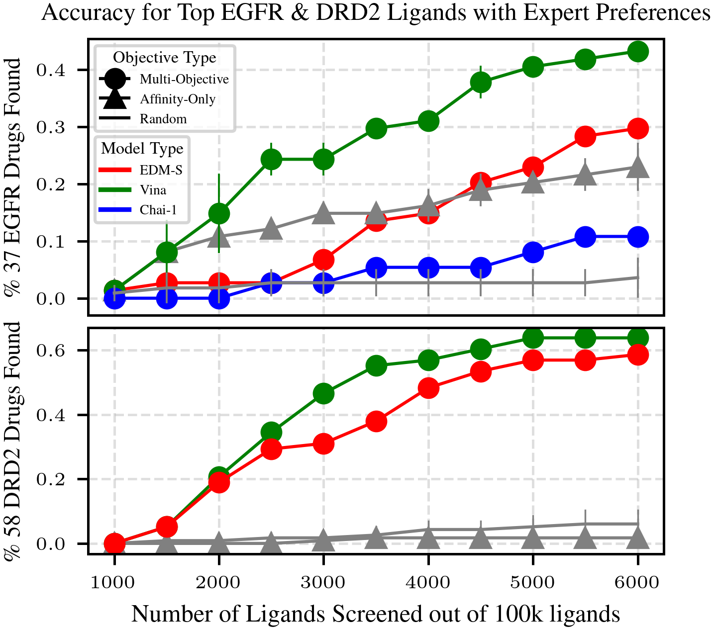
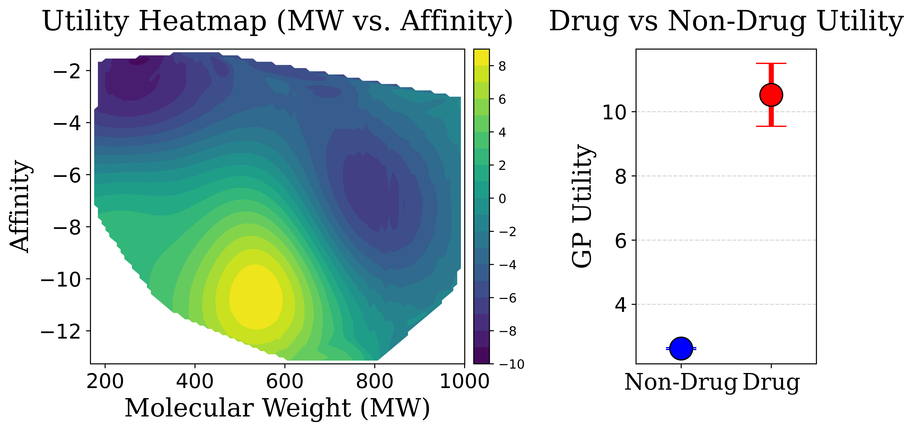

Preferential Multi-Objective Bayesian Optimization for Drug Discovery
Tai Dang1,3,Hung Pham2,Sang Truong1, Ari Glenn1, Wendy Nguyen3, Edward A Pham1, Jeffrey S. Glenn1, Sanmi Koyejo1, Thang Luong1
1Stanford University, 2Imperial College London, 3RHF.AI


Outline
- Problem Setup
- Virtual Screening on Synthetic Functions
- Chemist-guided Active Preferential Virtual Screening
- Protein-ligand docking with Diffusion Models
Overview: Problem setup
Traditional large-scale docking consumes extensive computational resources, making the process slow and costly. Chemists manually evaluate thousands of molecules, selecting hits based on intuition. This step is critical yet slow, forming a major bottleneck. Experts must balance multiple drug properties (e.g., efficacy, safety, solubility), complicating decision-making and extending timelines in drug development.
Overview


Overview: Streamlining Virtual Screening with Advanced Techniques
Challenges:
- Conducting virtual screening within budget constraints.
- Incorporating multiple objectives beyond affinity.
- Training efficient docking models with limited resources.
Solutions:
- Optimize ligand selection through active screening.
- Utilize Preferential Multi-Objective Bayesian Optimization.
- Enhance docking model through diffusion model.
Outline
- Problem Setup
- Virtual Screening on Synthetic Functions
- Chemist-guided Active Preferential Virtual Screening
- Protein-ligand docking with Diffusion Models
1. Problem Setup
For a given protein linked to a certain disease, the goal of virtual screening is to select a few small molecules (i.e., ligand) from a library of millions candidates such that the selected candidate will have the highest utility in disease treating.

Source: Graff et al., 2021
1. Problem Setup
Docking consumes vast computational resources on low-scoring compounds, though only top-ranked molecules advance for validation. To refine this process, virtual screening includes hit identification, where chemists select promising compounds based on ligand properties.
Even with expert-defined trade-offs, exhaustively screening millions of candidates is infeasible. To address this, we prioritize promising ligands while avoiding those likely to be poor candidates.
2. Active Virtual Screening
To prioritize high-potential ligands, we use Preferential Bayesian Optimization, an approach that balances exploring new candidates and exploiting known promising ones to efficiently find optimal solutions.

1. Problem Setup
Learning a preference model from binary preference data can be viewed as learning a classifier.
$$p(y \mid x_1, x_2; f) = \frac{e^{f(x_1)}}{e^{f(x_1)} + e^{f(x_2)}}$$
$$= \frac{1}{1 + e^{-[f(x_1)-f(x_2)]}}$$
$$= \sigma(f(x_1)-f(x_2))$$
where $\sigma(\cdot)$ is the sigmoid function.1. Problem Setup
Goal: Identify the top k candidate ligands for a given protein from a library.
Overview
Outline
- Problem Setup
- Virtual Screening on Synthetic Functions
- Chemist-guided Active Preferential Virtual Screening
- Protein-ligand docking with Diffusion Models
2. Active Virtual Screening: Experiment Setup
Synthetic Utility Landscapes
- Testing synthetic functions helps refine the approach before human experiments.
- Benchmarks: Ackley, Alpine1, Hartmann, Dropwave, Qeifail, Levy.
- Each benchmark outputs a scalar utility for preference-based learning.
- Simulated objectives: affinity, rotatable bonds, molecular weight, LogP.
- 20K-ligand subset used for computational efficiency.

2. Active Virtual Screening: Evaluation Metrics
Metrics for evaluation
Regret
- $R_i = U^* - U(i)$
- Where $U^*$ is the highest possible utility in the library and $U(i)$ is the highest utility found by the model at iteration $i$
Percent of Best Ligand Found
- Definition: Percentage of screened ligands close in affinity to the best possible ligand. ($top_k \%$)
2. Active Virtual Screening: Screening Results

Outline
- Problem Setup
- Virtual Screening on Synthetic Functions
- Chemist-guided Active Preferential Virtual Screening
- Protein-ligand docking with Diffusion Models
3.Chemist-guided Active Preferential Virtual Screening: Overview
In drug discovery, selecting candidate ligands goes beyond targeting high-affinity molecules. Experts use their deep chemical intuition to balance competing properties such as synthesizability, solubility, and potential side effects. This approach ensures ligands are not only effective but also practical and safe for therapeutic use.
3.CheapVS
Depending on the disease and target protein, experts have intuition about ligand characteristics, balancing synthesizability, affinity, solubility, and side effects. For instance, bulky functional groups can enhance binding but reduce solubility or increase toxicity, complicating optimization.


3.CheapVS
These implicit expert knowledge, encoded as preferences over ligands, are valuable to elicit for effective virtual screening. We can leverage toolkits from the field of machine learning from human preferences to tackle this challenge.
| First ligand | Second ligand | Preference $(x_1 \succ x_2)$ |
|---|---|---|
| [-7.81, 113.38, 0.51] | [-8.12, 116.28, 0.47] | 0 |
| [-10.45, 186.17, 0.29] | [-8.12, 116.28, 0.47] | 1 |
| [-6.18, 35.32, 0.83] | [-8.12, 116.28, 0.47] | 0 |
Each ligand is represented by a set of features, such as affinity, polar surface area, QED drug-likeness score
3.CheapVS

3.CheapVS: Experiment Setup
BO Optimization for EGFR
EGFR (Epidermal Growth Factor Receptor) is a protein that regulates cell growth. Mutations in EGFR are linked to cancers.
- Screening library: 100K molecules.
- 37 FDA-approved or late-stage drugs as goal-optimal molecules.
- Expert-labeled preferences for multi-objective optimization.
- 4 Objectives: Affinity, Molecular Weight, Lipophilicity, Half-life.
- BO samples 1%, adds 0.5% per iteration (10 iterations, 6% total).
3.CheapVS: Results
3.CheapVS: GP Elicitation
Outline
- Problem Setup
- Virtual Screening on Synthetic Functions
- Chemist-guided Active Preferential Virtual Screening
- Protein-ligand docking with Diffusion Models
4. Diffusion Model: Noise to pattern
Diffusion models are a type of machine learning model used to generate data by starting with noise and gradually creating a meaningful pattern.
4. Diffusion Model: Why used for docking?
Why Use Diffusion Models for Molecules?

4. Diffusion Model: Training Data
The PDB database is limited:
- Contains only ~17,000 protein-ligand pairs.
- Features around 5,000 unique proteins.
For robust diffusion model training, millions of diverse data points are needed. Data augmentation enhances:
- Ligand Diversity: Broader chemical structure and property range.
- Protein Diversity: Wider variety of binding sites for better model generalization.
Data augmentation techniques create a richer dataset, boosting model performance.
4. Diffusion Model: Training Data
Data Augmentation Techniques:
- Molecular Dynamics: Employed 59,330 dynamic frames of 14,387 protein-ligand complexes to model ligand flexibility, amounting to 75K training data.
- Data Crawling: Curated 322K protein-ligand complexes, yielding 80K unique proteins.
- Pharmacophore Alignment: Generated up to 11M pharmacophore-consistent ligand pairs, significantly expanding the ligand training data.

Figure 1: MD Simulation Trajectories

Figure 2: Pharmacophore Modeling
4. Diffusion Model: Results
Benchmark on Posebusters Dataset: Posebusters: Version 1 (428 structures) and Version 2 (308 structures), released post-2021 in PDB. Performance: % of ligand pairs with $RMSD < 2 Å$ in pocket alignment.

4. Diffusion Model: Neural Search for Docking
Traditional docking tools are slow, limiting the efficiency of application of virtual screening.
- Traditional Tools (e.g., Vina, Smina): ~5mins per pose
- Chai (AlphaFold3-like): ~1 mins for 1 pose (5x faster)
- Our Diffusion Model: ~10s for 128 poses (90x faster)
5. Conclusion
- Efficient Drug Discovery: Our framework accelerates VS by leveraging preferential multi-objective BO, requiring only a small subset of ligands and expert pairwise preferences.
- Strong Performance: Our algorithm successfully identified 16/37 drugs, significantly outperforming baseline methods, highlighting the power of preference-based optimization.
6. Next steps
- Listwise preference for providing richer preference information
- Build on top of state-of-the-art models such as AlphaFold3